물류관리사-1교시 (2015-07-04 기출문제)
1과목: 물류관리론
1. 전자상거래 시대의 물류에 관한 설명으로 옳지 않은 것은?
- 전자상거래 확산으로 인해 온라인 구매 비중이 높아져 배송물류비가 증가하고 있다.
- 인터넷 마켓플레이스(market place)의 발달로 물류의 역할과 중요성이 줄어들고 있다.
- 전자상거래를 지원하는 물류는 온라인 추적시스템 구축, 글로벌 배송시스템 구축, 주문시스템과의 연동 등이 중요하다.
- 소비자의 다양한 니즈를 충족시킬 수 있는 신속하고 효율적인 물류시스템 구축이 필요하다.
- 소비자의 개인정보 유출 가능성이 커지고 있으므로 물류시스템 구축 시 보안기능 강화가 필요하다.
(정답률: 78%)

2. 기능적 물류활동에 관한 설명으로 옳지 않은 것은?
- 운송은 물품의 이동을 통하여 효용가치를 증대시키는 활동을 말하며, 물류거점 간의 간선수송과 일정지역 내의 배송으로 분류할 수 있다.
- 포장은 한국산업표준에 따라 내부포장을 의미하는 속포장과 외부포장을 의미하는 겉포장의 두 가지로 나누어진다.
- 하역은 운송과 보관에 수반하여 발생하는 부수작업으로 물품을 취급하거나 상하차 하는 행위 등을 총칭한다.
- 보관은 물품의 저장을 통하여 생산과 소비의 시간적인 간격을 해소시키는 활동을 말한다.
- 물류정보는 운송, 보관, 포장, 하역 등의 기능을 연계시켜 물류관리 전반을 효율적으로 수행하게 한다.
(정답률: 56%)
3. 상류(商流)와 물류(物流)에 관한 설명으로 옳은 것은?
- 상류는 물류경로 상에서 이동 또는 보관 중인 물품에 대한 관리활동을 포함한다.
- 상류와 물류를 분리하면 재고가 분산되어 재고관리에 어려움이 발생할 수 있다.
- 물류란 상품의 소유권 이전 활동을 말하며, 유통경로 내에서 판매자와 구매자의 관계에 초점이 있다.
- 상권이 확대될수록, 무게나 부피가 큰 제품일수록 상류와 물류의 통합 필요성이 높아진다.
- 상류와 물류를 분리하면 물류거점에서 여러 지점 및 영업소의 주문을 통합할 수 있어 배송차량의 적재율 향상과 효율적 이용이 가능하다.
(정답률: 53%)
4. 물류관리를 통하여 국민경제에 기여할 수 있는 항목 중 옳지 않은 것은?
- 유통효율의 향상을 통하여 기업의 체질을 강화하고 물가상승을 억제시킬 수 있다.
- 식품의 선도 유지 등 각종 상품의 물류 서비스 수준을 높여 소비자에게 질적으로 향상된 서비스를 제공할 수 있다.
- 물류 효율화를 통하여 소비 편중을 높이고 과잉생산을 해소시킬 수 있다.
- 도시교통의 체증완화를 통하여 생활환경을 개선할 수있다.
- 물품의 원활한 유통을 통하여 지역 간의 균형발전을 도모할 수 있다.
(정답률: 55%)
5. 물류서비스의 품질 측정 구성요소로 옳지 않은 것은?
- 화주기업에게 차량, 장비 등 물류서비스를 원활히 제공해 줄 수 있는 능력
- 화주기업에게 전반적인 업무수행에 대해 확신을 주는 능력
- 화주기업에게 정확하고 신속하게 물류서비스를 제공할 수 있는 능력
- 화주기업과의 원활한 의사소통 능력
- 화주기업의 영업이익률을 높여 줄 수 있는 능력
(정답률: 58%)
6. 물류서비스 수준을 결정하는 요인에 관한 설명으로 옳지 않은 것은?
- 주요 기능별 물류비가 각각 최소화 되는 점에서 서비스 수준을 결정하는 것이 필요하다.
- 일반적으로 물류비용의 책정은 공헌이익이 최대가되는 시점에서 결정되어야 한다.
- 물류서비스 수준과 물류비용 사이에는 상충관계가 있다.
- 물류서비스 수준의 향상은 고객과의 장기적인 관계 형성에 도움이 된다.
- 물류서비스 수준을 결정하기 위해서는 시장 환경이나 경쟁 환경 등을 고려해야 한다.
(정답률: 38%)
7. 물류관리의 중요성이 증가하는 이유로 옳지 않은 것은?
- 생산혁신 및 마케팅을 통한 이익 실현이 한계에 달했다.
- 고객 요구가 다양화, 전문화, 고도화되어 적절한 대응이 필요해졌다.
- 소품종, 대량, 다빈도 거래 확대로 물류관리의 중요성이 증대하였다.
- 글로벌화로 인해 국제물류의 범위가 확대되었다.
- 물류비용 절감과 서비스 향상이 기업경쟁력의 핵심요소로 대두되었다.
(정답률: 65%)
8. 물류계획 수립에 관한 내용으로 옳은 것을 모두 고른 것은?
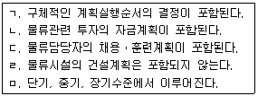
- ㄱ, ㄴ, ㅁ
- ㄱ, ㄷ, ㅁ
- ㄴ, ㄷ, ㄹ
- ㄱ, ㄴ, ㄷ, ㅁ
- ㄱ, ㄴ, ㄷ, ㄹ, ㅁ
(정답률: 52%)
9. 물류와 기업경영의 관계를 설명하는 것으로 옳지 않은 것은?
- 물류는 기업의 하위시스템이기 때문에 물류계획을 수립함에 있어 기업의 경영전략을 고려하여야 한다.
- 기업 활동에서 제조부문의 원가절감이 한계에 달하여 물류의 중요성이 부각되고 있다.
- 운송, 보관, 하역, 포장 및 물류정보기술이 지속적으로 발전하면서 기업의 비용절감에 더 많은 영향을 주고 있다.
- 기업의 물류혁신 활동은 이익률을 개선하는데 영향을 주지만 마케팅, 고객 서비스 만족도 등에는 영향을 주지 않는다.
- 사회간접자본(SOC)과 물류기반시설투자가 부족하면 기업물류비 절감에 부정적인 영향을 끼친다.
(정답률: 67%)
10. 3자물류 도입으로 인해 화주기업이 얻는 직접적인 기대효과로 옳은 것은?
- 물가상승 억제
- 배송구역의 밀도 증가
- 핵심역량에 집중 가능
- 교통체증 감소
- 배송구역 축소
(정답률: 62%)
11. 다음 설명에 해당하는 물류조직은?
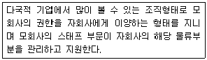
- 사업부제형 물류조직
- 프로젝트형 물류조직
- 그리드형 물류조직
- 직능형 물류조직
- 라인ㆍ스태프형 물류조직
(정답률: 57%)
12. 3자물류 활용에 관한 설명으로 옳은 것은?
- 국가물류기본계획에 따르면 화주기업이 중ㆍ장기적으로 3자물류를 거쳐 1자물류로 전환하도록 유도하고 있다.
- 화주기업과 물류기업 간 수직적인 갑을 관계를 형성하는 것이 필요하다.
- 3자물류업체와 Win-Win 전략을 통해 장기적인 협력관계를 구축하는 것이 바람직하다.
- 화주기업의 물류비 및 초기자본투자가 증가한다.
- 화주기업의 고객정보유출에 대한 리스크가 감소한다.
(정답률: 72%)
13. BPR에 관한 설명으로 옳은 것은?
- BPR은 Business Process Replenishment의 약자이다.
- BPR의 성공을 위해서는 최고경영층의 주도와 구성원의 공감대가 필요하다.
- BPR은 정보시스템 부서를 주축으로 해야 하며 대상 프로세스에 관련된 부서는 배제해야 한다.
- 업무프로세스를 변화시키는 것이며 혁신이 아닌 개선의 형태를 취하는 것이 특징이다.
- BPR의 궁극적인 목적은 고객보다는 기업중심의 경영체제를 만드는 것이므로 기업효율성 극대화를 최우선으로 한다.
(정답률: 53%)
14. 물류시스템의 구축 방향에 관한 설명으로 옳지 않은 것은?
- 수배송, 포장, 보관, 하역 등 주요 부문을 유기적으로 연계하여 구축하여야 한다.
- 물류제도나 절차를 개선하는 것보다는 기술혁신을 중심으로 하여 추진하는 것이 바람직하다.
- 기업 이익을 최대화 할 수 있는 방향으로 설계되어야 한다.
- 장기적이고 전략적인 사고를 물류시스템에 도입하여야 한다.
- 물류 전체를 통합적인 시스템으로 구축하여 상충 관계에서 발생하는 문제점을 해결하는 방안을 모색하여야 한다.
(정답률: 59%)
15. 다음 괄호 안에 알맞은 용어를 고르시오.
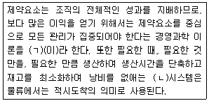
- ㄱ: TOC, ㄴ: 6-시그마
- ㄱ: TOC, ㄴ: JIT
- ㄱ: TOC, ㄴ: TQM
- ㄱ: TQM, ㄴ: 6-시그마
- ㄱ: TQM, ㄴ: JIT
(정답률: 58%)
16. 물류비를 계산하고 관리하는 목적으로 옳지 않은 것은?
- 물류예산을 편성하고 통제한다.
- 물류활동의 문제점을 파악한다.
- 물류활동의 규모를 파악하고 중요성을 인식시킨다.
- 주주들에게 공정한 회계자료 제공을 위한 재무제표를 작성한다.
- 관리자 또는 의사결정자에게 유용한 물류비 정보를 제공한다.
(정답률: 48%)
17. (주)한국기업은 가전제품 유통을 위하여 전국적인 운송망을 갖추고 있으나, 본사의 운송영업팀에서 전국의 배송 차량을 통합배차하고 있으며 운송차량은 지역 구분 없이 운행하고 있다. 아래의 표를 이용하여 운송비 100,000천원 중에서 제품 A와 B의 운송비는 각 각 얼마인가? (단, 운송비 배부는 총운송거리를 기준으로 한다.)
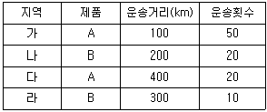
- A: 30,000 천원, B: 70,000 천원
- A: 45,000 천원, B: 55,000 천원
- A: 50,000 천원, B: 50,000 천원
- A: 65,000 천원, B: 35,000 천원
- A: 70,000 천원, B: 30,000 천원
(정답률: 55%)
18. 경제적주문량(Economic Order Quantity) 모형과 관련하여 빈칸에 적당한 항목은?
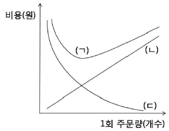
- ㄱ: 재고유지비용
ㄴ: 총비용
ㄷ: 주문비용 - ㄱ: 재고유지비용
ㄴ: 주문비용
ㄷ: 총비용 - ㄱ: 총비용
ㄴ: 재고유지비용
ㄷ: 주문비용 - ㄱ: 총비용
ㄴ: 주문비용
ㄷ: 재고유지비용 - ㄱ: 주문비용
ㄴ: 총비용
ㄷ: 재고유지비용
(정답률: 38%)
19. 2008년에 개정된 정부의「기업물류비 산정지침」에 따라 물류비를 구분할 때 다음 자료를 활용하여 기업물류비와 하역비를 구하시오. (단, 제시된 항목 외에 다른 물류비는 발생하지 않으며, 이자 비용은 고려하지 않는다.)
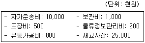
- 기업물류비: 12,500 천원, 하역비: 800천원
- 기업물류비: 12,500 천원, 하역비: 1,300천원
- 기업물류비: 37,500 천원, 하역비: 0 원
- 기업물류비: 37,500 천원, 하역비: 800천원
- 기업물류비: 37,500 천원, 하역비: 1,300천원
(정답률: 32%)
20. 유통경로의 구조를 결정하는 이론이 아닌 것은?
- 연기-투기 이론
- 게임 이론
- 체크리스트 법
- 대리인 이론
- 최단경로 이론
(정답률: 20%)
21. 수직적 유통경로시스템(VMS: Vertical Marketing System)에 관한 설명으로 옳지 않은 것은?
- 동맹형 VMS는 둘이상의 유통경로 구성원들이 대등한 관계에서 상호 의존성을 인식하고 자발적으로 형성한 통합시스템 또는 제휴시스템이다.
- 기업형 VMS는 한 경로 구성원이 다른 경로 구성원을 법적으로 소유 및 관리하는 결속력이 가장 강력한 유형이다.
- 관리형 VMS의 대표적인 형태로는 프랜차이즈 시스템을 들 수 있다.
- 수직적 유통경로시스템은 전통적 유통경로시스템의 단점인 경로구성원 간의 업무조정 및 이해상충의 조정을 전문적으로 관리 혹은 통제하는 경로조직이다.
- 도ㆍ소매상이 제조업체를 직접 통제하기 위하여 계열화하는 것을 후방통합이라고 한다.
(정답률: 35%)
22. 조달물류에 관한 설명으로 옳지 않은 것은?
- 과거에는 조달물류 기능이 주로 기업의 생산 보조 수단으로 활용되었다.
- 공급자와의 밀접한 관계유지, 글로벌 조달, 공급자의 신제품 개발 참여 등과 같이 구매 관리의 방법이나 환경이 과거와는 달라져 조달물류의 전략적 중요성이 높아졌다.
- 조달물류의 중요성이 높아짐에 따라 구매(purchasing) → 공급망(supply chain) → 조달(procurement)의 개념으로 진화되어 왔다.
- MRP시스템은 자재소요계획으로부터 출발하여 회사의 모든 자원을 계획하고 관리하는 전사적 자원 관리로 발전되어 왔다.
- 물류의 시발점으로 원부자재의 조달부터 매입자의 물품 보관창고에 입고ㆍ관리되어 생산 공정에 투입되기 직전까지의 물류활동을 말한다.
(정답률: 56%)
23. 물류정보시스템의 구축 요건에 관한 설명으로 옳은 것은?
- 대량정보를 즉시 입력하는 실시간 입력 시스템이 필요하지만 그 처리결과에 대한 정보를 실시간으로 제공할 필요는 없다.
- 물류 계획과 실행을 위한 시스템이므로 다른 시스템의 간섭 없는 독자적인 처리 프로세스를 갖추어야 한다.
- 물류정보시스템은 재고관리 정확도 향상, 결품율 감소, 배송시간 정확도 보장 등과 같은 효과를 기대하지만 비용절감을 목표로 하지는 않는다.
- 물류정보시스템 구축은 패키지솔루션(package solution)을 도입하는 방법과 자체적으로 개발하는 방법이 있지만 자체적으로 개발하는 것 보다는 표준화된 패키지 솔루션을 도입해야 한다.
- 물류정보를 효율적으로 입력하고 관리하기 위해서는 바코드나 RFID 정보 등을 활용하는 물류기기와 연동되게 할 필요가 있다.
(정답률: 59%)
24. 물류정보시스템의 종류로 옳지 않은 것은?
- WMS(Warehouse Management System)
- TMS(Transportation Management System)
- ASP(Application Service Provider)
- CVO(Commercial Vehicle Operation)
- OMS(Order Management System)
(정답률: 58%)
25. RFID의 물류부문 도입에 관한 설명으로 옳지 않은 것은?
- 자동차 제조공정에 응용가능하다.
- 창고관리에 적용할 경우 유용하게 활용될 수 있다.
- 개별 상품에 부착해서 관리하기 위해서는 상품의 가치와 태그의 가격을 살펴봐야 한다.
- 개별 상자나 파렛트(pallet)에는 부착해서 사용할 수 있으나 컨테이너에는 사용할 수 없다.
- 장기적 관점에서 채찍효과(bullwhip effect)를 줄이는데 기여할 수 있다.
(정답률: 66%)
26. RFID 시스템의 장점으로 옳지 않은 것은?
- 금속 및 액체 등에 의한 전파장애가 발생하지 않는다.
- 태그 정보의 변경 및 추가가 용이하다.
- 태그를 다양한 형태와 크기로 제조할 수 있다.
- 일시에 다량의 정보를 빠르게 판독할 수 있다.
- 태그에는 온도계, 고도계, 습도계 등 다양한 센서 기능을 부가할 수 있다.
(정답률: 43%)
27. 바코드에 관한 설명으로 옳지 않은 것은?
- 인쇄된 바코드는 정보의 변경이나 추가가 안되는 단점이 있다.
- 바코드는 제작이 용이하고 비용이 저렴하다.
- EAN-13(표준형A)은 다품목을 취급하는 업체를 위한 코드로 우리나라의 국가 식별코드는 880 이다.
- ISBN은 물류단위(logistics unit) 중 주로 박스에 사용되는 국제표준 물류 바코드로 생산공장, 물류센터 등에서 입ㆍ출하 시 판독되는 표준 바코드이다.
- 일차원 바코드는 서로 굵기가 다른 흑색의 바와 공간으로 상품의 정보를 표시하고 광학적으로 판독할 수 있도록 부호화한 것이다.
(정답률: 55%)
28. 공급망관리(SCM: Supply Chain Management)의 등장배경으로 옳지 않은 것은?
- 제조업체의 경우 전체 부가가치의 약 60~70%가 제조과정 내부에서 발생하고 있어 공장자동화를 통한 기업내부혁신의 필요성이 커졌기 때문이다.
- 수요정보의 왜곡현상을 줄이고 그에 따른 안전재고의 증가를 예방하기 위해서이다.
- 인터넷, EDI 및 ERP와 같은 정보통신기술의 발전으로 인해 공급망관리를 통한 기업 간 프로세스 통합이 가능하게 되었다.
- 기업의 경영환경이 글로벌화되고 물류관리의 복잡성이 증대되고 있기 때문에 통합적 물류관리의 필요성이 높아졌다.
- 기업경쟁력을 높이기 위해서 기업 내부 최적화보다는 공급망 전체의 최적화를 통한 물류관리가 중요해졌다.
(정답률: 55%)
29. JIT-II 시스템에 관한 설명으로 옳은 것은?
- 도요타(Toyota)식 생산방식이라고도 한다.
- 칸반(Kanban) 시스템이라고도 한다.
- 미국에서는 낭비가 없거나 적다는 의미로 린(Lean) 생산방식으로도 부른다.
- 미국의 보스(Bose)사에서 처음 도입한 시스템이다.
- push 전략에 기반한 생산방식으로 IT활용을 중심으로 개발된 공급망관리 기법이다.
(정답률: 30%)
30. SCM의 응용기법에 관한 설명으로 옳은 것은?
- ECR(Efficient Consumer Response): 유통업체와 제조업체가 고객에게 저렴한 가격으로 상품을 제공하고 고객만족도를 높이기 위해 공급망을 push 방식으로 변화시키고 제품을 보충하는 기법이다.
- QR(Quick Response): 미국 식료품업계에서 개발한 공급망관리 기법으로써 유통업체의 물류센터에 있는 각종 데이터가 제조업체로 전달되면 제조업체가 주관하여 물류센터로 제품을 배송하고 관리하는 기법이다.
- Mass Customization: 비용, 효율성 및 효과성을 희생하여 개별 고객들의 욕구를 파악하고 충족시키는 전략이다.
- Postponement: 공장에서 제품을 완성하는 대신시장 가까이로 제품의 완성을 지연시켜 소비자가 원하는 다양한 수요를 만족시키는 전략적 지연을 의미한다.
- VMI(Vendor Managed Inventory): 수요자 주도형 재고관리로써 효율적 매장구색, 효율적 재고보충, 효율적 판매촉진 및 효율적 신제품 개발 등이 핵심적 실행전략이다.
(정답률: 52%)
31. 크로스 도킹(cross-docking)에 관한 설명으로 옳지 않은 것은?
- 미국의 K마트에서 최초로 개발하고 실행하여 성공을 거둔 공급망관리 기법이다.
- 크로스 도킹은 주문한 제품이 물류센터에서 재분류되어서 각각의 점포로 즉시 배송되어야하는 신선식품의 경우에 보다 적합하다.
- 크로스 도킹 시스템이 도입되면 물류센터는 보관 거점의 기능에서 탈피할 수 있다.
- EDI, 바코드, RFID 등과 같은 정보기술의 활용을 통해 크로스 도킹 시스템은 보다 효과적으로 실현될 수 있다.
- 크로스 도킹을 통해 물류센터에서 제품이 머무르는 시간을 감소시킬 수 있는 장점이 있다.
(정답률: 48%)
32. 채찍효과(bullwhip effect)에 관한 설명으로 옳지 않은 것은?
- 시장에서의 수요정보가 왜곡되는 현상을 말한다.
- 채찍효과가 발생하는 이유 중의 하나는 수요예측이 소비자의 실제 수요에 기반하지 않고 거래선의 주문량에 근거하여 이루어지기 때문이다.
- 일괄주문(batch order)은 수요의 왜곡현상을 발생시키고 채찍효과를 유발할 수 있다.
- 공급망 전반에 걸쳐 수요정보를 중앙집중화하고 상호 공유한다면 채찍효과를 줄일 수 있다.
- 공급망 내 각 주체 간의 전략적 파트너십 보다는 단순 계약 관계의 구축이 채찍효과 감소에 도움이 된다.
(정답률: 58%)
33. 물류합리화에 관한 설명으로 옳지 않은 것은?
- 물류합리화를 위해서는 시스템적 접근에 의한 물류활동 전체의 합리화를 추진하여야 한다.
- 물류 수발주 처리의 전산화 등 물류정보의 전달체계 개선은 물류합리화 대상이 되지 않는다.
- 경제규모의 증대, 물류비의 증대 및 노동력 수급상의 문제점 등은 물류합리화의 필요성을 증대시킨다.
- 차량이나 창고공간의 활용을 극대화해서 유휴부문을 최소화하는 것도 물류합리화 대책이 될 수 있다.
- 물류합리화는 운송, 보관, 포장, 하역뿐만 아니라 물류조직도 그 대상이 된다.
(정답률: 64%)
34. 물류표준화에 관한 설명으로 옳지 않은 것은?
- 물류활동의 각 단계에서 사용되는 기기, 용기, 설비 등을 규격화하여 상호간 호환성과 연계성을 확보하는 것이다.
- 단순화, 규격화 등을 통하여 물류활동의 기준을 부여함으로써 물류효율성을 높이는데 목적이 있다.
- 물류표준화를 통하여 기업차원의 미시적 물류뿐만 아니라 국가차원의 거시적 물류의 효율성도 높일 수 있다.
- 물류용어의 통일 및 거래전표 등은 물류표준화 대상이 아니다.
- 현재 한국산업표준에는 우리나라 유닛로드용 평파렛트를 1,100 × 1,100㎜, 1,200 × 1,000 ㎜ 두 가지로 규정하고 있다.
(정답률: 65%)
35. AEO(Authorized Economic Operator)에 관한 설명으로 옳은 것은?
- AEO는 미국 국방부가 관리ㆍ운영하는 제도이다.
- AEO는 미국 국방부가 기업에 강제적으로 요구하는 제도이다.
- AEO로 인증받을 수 있는 범위는 보안 및 안전에 국한된다.
- AEO 인증을 받은 기업은 상호인증협정(MRA)을 맺은 국가에 수출할 때 인증을 받지 않은 기업에 비해 신속한 통관절차를 받을 수 있다.
- 아직까지 AEO 인증제도가 국내에 도입되지 않아 인증을 받은 국내 기업이 없는 실정이다.
(정답률: 57%)
36. 물류공동화에 관한 설명으로 옳지 않은 것은?
- 공동수배송이란 자사 및 타사의 원자재나 완제품을 공동으로 수배송하는 것을 말한다.
- 화주기업은 공동수배송을 통하여 물류비를 절감할 수 있다.
- 물류공동화 실행 시 기업비밀에 대한 유출 우려는 공동화 확산의 저해요인이 되고 있다.
- 소량, 다빈도 배송의 증가는 수배송공동화의 필요성을 증대시킨다.
- 수배송공동화를 통하여 고객맞춤형 물류관리가 더욱 용이해지고 수배송의 유연성이 증가한다.
(정답률: 40%)
37. 공동수배송의 추진 여건에 관한 설명으로 옳지 않은 것은?
- 공동수배송에 참가한 기업들이 취급하는 제품의 이질성이 높을수록 공동수배송 추진이 용이하다.
- 배송조건이 유사하고 표준화가 가능할 경우 공동 수배송의 추진이 용이하다.
- 공동수배송을 위한 주관기업이 있을 경우 공동수 배송의 추진이 용이하다.
- 일정지역 내에 공동수배송에 참여할 수 있는 복수 기업이 존재할 경우 공동수배송의 추진이 용이하다.
- 공동수배송에 참가할 기업들 간의 이해관계가 일치할수록 공동수배송 추진이 용이하다.
(정답률: 63%)
38. 물류공동화의 대상에 해당하는 것을 모두 고른 것은?
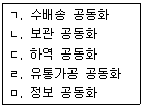
- ㄱ, ㄴ
- ㄱ, ㄴ, ㄷ
- ㄱ, ㄴ, ㄷ, ㄹ
- ㄱ, ㄴ, ㄷ, ㅁ
- ㄱ, ㄴ, ㄷ, ㄹ, ㅁ
(정답률: 56%)
39. 각종 국제환경협약에 관한 내용으로 옳지 않은 것은?
- 몬트리올의정서에서는 CFC(염화불화탄소) 등 오존층 파괴물질의 생산 및 사용을 규제하고 있다.
- EuP(Energy-using Product)에서는 납, 크롬, 카드뮴, 수은 등 6개 물질에 대한 사용규제 조항을 담고 있다.
- WEEE에서는 생산자의 전기ㆍ전자제품 폐기에 관한 처리지침을 담고 있다.
- 교토의정서는 에너지 사용과 관련된 협약으로 지구온난화 물질에 대한 규제를 담고 있다.
- 바젤협약에서는 유해 폐기물의 국가 간 이동을 금지하고 있다.
(정답률: 48%)
40. 역물류(reverse logistics)에 관한 설명으로 옳은 것은?
- 순물류에 비해 수작업 비중이 높고 자동화가 어렵다.
- 순물류에 비해 화물 수량을 정확하게 예측할 수 있다.
- 순물류에 비해 화물의 추적 및 가시성 확보가 용이하다.
- 회수되는 시기 및 상태에 관한 정확한 예측이 가능하다.
- 판매되지 않아 반품된 제품은 역물류에 해당되지 않는다.
(정답률: 63%)
2과목: 화물수송론
41. 화주 M사는 A사로부터 아래와 같은 운송조건의 제안을 받고, 채트반(Chatban) 공식을 이용하여 자사의 화물자동차 운송과 비교하였다. 그 결과에 관한 설명으로 옳지 않은 것은?
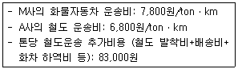
- 60 ~ 80 km에서는 M사의 화물자동차 운송이 유리하다.
- 83 km 지점에서는 두 운송비가 동일하다.
- 90 km 지점에서 두 운송비가 동일해지는 톤당 철도운송 추가비용은 86,000원이다.
- 화물자동차운송의 경제효용거리는 83 km이다.
- 100 ~ 120 km에서는 A사의 철도운송이 경제적이다.
(정답률: 43%)
42. 효율적인 수배송계획을 입안할 때의 고려 사항에 관한 설명으로 옳지 않은 것은?
- 물류채널의 명확화는 물류채널을 이해하고 그 순서도를 명확히 작성하는 것이다.
- 화물특성의 명확화는 화물에 대한 품명, 외장, 단위당 중량, 용적, 포장형태 등을 명확히 하는 것이다.
- 수배송 단위의 명확화는 수배송 지역별이나 제품별로 1일당 수배송 단위가 어떻게 되는지를 명확히 하는 것이다.
- 수배송량의 명확화는 제품별, 수배송 지역별로 국제화물 수배송루트를 명확히 하는 것이다.
- 출하량 피크 시점의 명확화는 1일간의 출하량이나 취급량의 시간적 움직임을 명확히 하는 것이다.
(정답률: 44%)
43. 우리나라 공로수배송의 효율화 방안으로 옳지 않은 것은?
- 공로수배송의 효율성을 제고하기 위해서는 육ㆍ해ㆍ공을 연계한 공로수배송시스템을 구축하여야 한다.
- 종합물류정보시스템을 구축하여 공로수배송의 시스템화를 기할 수 있도록 지원하여야 한다.
- 공로, 철도, 연안운송, 항공운송 등이 적절한 역할 분담을 할 수 있도록 지원하여야 한다.
- 영세한 화물자동차운송업체의 소형 전문화를 통해 범위의 경제를 실현할 수 있는 기반을 조성하여야 한다.
- 업무영역조정, 요금책정의 자율화 등 시장경제원리에 입각한 자율경영 기반 구축을 지원하여야 한다.
(정답률: 46%)
44. 아래와 같이 공급지의 공급량과 수요지의 수요량이 각각 (100,140, 80)과 (120,100,100)인 수송계획이 있다. 보겔의 추정법(Vogel's Approximation Method)을 적용하여 총 수송비용이 최소가 되도록 공급량을 할당한다면 총 수송비용은 얼마인가?(단, 공급지에서 수요지까지의 수송비는 수송표각 셀의 좌측상단에 제시되어 있다.) (단위: 천원)
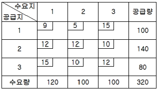
- 3,000천원
- 3,100천원
- 3,200천원
- 3,300천원
- 3,400천원
(정답률: 31%)
45. 다음과 같은 수배송 네트워크가 주어져 있을 때 출발지 S에서 목적지 F까지의 최대 수송량을 목적으로 할 때 용량이 남는 구간은? (단, 각 경로에 표시된 숫자는 경로별 수송용량을 의미하며 모든 수송로를 단독으로 사용한다.)
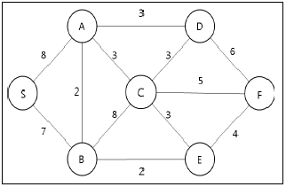
- A → B
- B → C
- C → F
- B → E
- E → F
(정답률: 35%)
46. 공동수배송의 도입 효과로 옳지 않은 것은?
- 운송의 대형화를 통해 적재율의 향상이 가능하다.
- 참여하는 화주의 운임부담을 경감할 수 있다.
- 교통혼잡 완화와 차량 감소의 효과가 있다.
- 물류센터나 창고 내 정보시스템의 효율적 사용이 가능하다.
- 동일 지역에서의 중복 교차배송은 감소하나, 공차율은 증가한다.
(정답률: 57%)
47. 유닛로드시스템에 관한 설명으로 옳은 것을 모두 고른 것은?
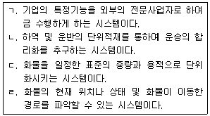
- ㄱ, ㄴ
- ㄱ, ㄷ
- ㄴ, ㄷ
- ㄴ, ㄹ
- ㄷ, ㄹ
(정답률: 50%)
48. 항공운송의 운임에 관한 설명으로 옳지 않은 것은?
- 최저운임은 요율표에 “N"으로 표시된다.
- 운임은 선불이거나 도착지 지불이다.
- 신문, 잡지, 정기간행물은 할인적용품목이다.
- 실제중량과 용적중량 중 숫자가 큰 중량이 운임산출의 기준 중량이 된다.
- 기본요율은 45kg 미만의 화물에 적용되는 요율로 일반화물요율의 기준이 된다.
(정답률: 49%)
49. 항공운송에 관한 설명으로 옳은 것을 모두 고른 것은?
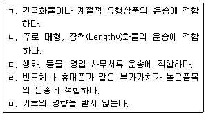
- ㄱ, ㄴ, ㄷ
- ㄱ, ㄴ, ㄹ
- ㄱ, ㄷ, ㄹ
- ㄴ, ㄹ, ㅁ
- ㄷ, ㄹ, ㅁ
(정답률: 57%)
50. 다음 중 택배사업자의 운송물 수탁거절 사유로 옳은 것은? (단, 공정거래위원회 표준약관 제 10026호 택배표준약관에 따른다.)
- 운송물 1포장의 가액이 300만원 미만의 경우
- 고객이 운송에 필요한 사항을 기재한 경우
- 현금, 카드, 어음, 수표, 유가증권 등 현금화가 가능한 물건인 경우
- 운송물의 종류와 수량이 운송장에 기재된 것과 동일한 경우
- 재생 가능한 일반 서류인 경우
(정답률: 55%)
51. 택배운송사업자의 손해배상책임에 관한 설명으로 옳지 않은 것은?
- 운송물의 멸실, 훼손 또는 연착에 관한 사업자의 책임은 운송물을 고객으로부터 수탁한 때부터 시작한다.
- 사업자의 손해배상한도액은 운송물의 멸실, 훼손 또는 연착 시에 사업자가 손해를 배상할 수 있는 최저 한도액을 말한다.
- 사업자는 천재지변 기타 불가항력적인 사유에 의하여 발생한 운송물의 멸실, 훼손 또는 연착에 대해서는 면책이 된다.
- 사업자의 배상책임은 수화인이 운송물을 수령한 날로부터 14일 이내에 통지하지 아니하면 소멸한다.
- 고객이 운송장에 운송물의 가액을 기재하지 않은 경우에 사업자의 손해배상한도액은 50만원으로 한다.
(정답률: 48%)
52. 택배운송에 관한 설명으로 옳지 않은 것은?
- 주로 다품종 소형ㆍ소량화물을 취급한다.
- 송화주의 문전에서부터 수화주의 문전까지 편의위주의 운송체계이다.
- 우리나라는 일반적으로 1개의 중량이 30kg 이하의 화물을 취급한다.
- 영업용 화물차량은 등록제이다.
- 쿠리어 서비스(Courier service)는 상업서류송달서비스를 포함한다.
(정답률: 29%)
53. 택배운송장의 기능에 관한 설명으로 옳지 않은 것은?
- 계약서의 기능
- 택배요금 영수증의 기능
- 화물인수증의 기능
- 화물취급지시서의 기능
- 유가증권의 기능
(정답률: 48%)
54. 화주 M사는 아래와 같은 운송조건에서 A(북서코너법, North-West Corner Method)와 B(최소비용법, Least-cost Method)를 이용하여 총 운송비를 계산하였다. 그 결과에 관한 설명으로 옳은 것은?(단, 공급지에서 수요지까지의 수송비는 수송표각 셀의 중앙에 제시되어 있다.) (단위: 만원, ton)
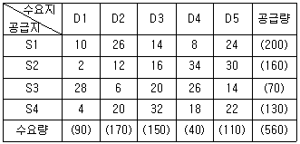
- B보다 A의 총 운송비가 더 저렴하다.
- A에 의한 총 운송비는 7,200만원이다.
- B에 의한 총 운송비는 6,900만원이다.
- A와 B의 운송비는 동일하다.
- A와 B의 총 운송비의 차액은 2,480만원이다.
(정답률: 25%)
55. 화물자동차의 명칭과 화물적재와의 관계에 관한설명으로 옳은 것은?
- 전폭: 팔레트 적재 수, 컨테이너의 적재여부에 영향을 준다.
- 전·후 오버행: 커브 시 안전도에 영향을 준다.
- 하대높이: 지하도 및 교량 통과 높이에 영향을 준다.
- 제1축간 거리: 축간거리가 길수록 적재함의 길이가 커지거나 적재함 중량이 뒷바퀴에 많이 전달된다.
- 오프: 오프 값이 클수록 적재함 중량이 뒷바퀴에 많이 전달된다.
(정답률: 18%)
56. 화물운송에 있어 공로운송의 증가 이유에 관한 설명으로 옳지 않은 것은?
- 도심지, 공업단지 및 상업단지까지 문전운송을 쉽게 할 수 있다.
- 화주가 다수인 소량 화물을 각지로 신속하게 운송 할 수 있다.
- 단거리 수송에서는 정차장 비용, 1회 발차시 소요되는 동력 등 철도보다 경제성이 있다.
- 도로망이 확충될 때 운송상의 경제성과 편의성이 증대하기 때문이다.
- 철도운송에 비해 규모의 경제효과가 커서 상대적으로 투자가 용이하다.
(정답률: 58%)
57. 국제 해상 컨테이너 화물운송에 관한 설명으로 옳지 않은 것은?
- 우리나라에서는 10 feet 컨테이너가 가장 많이 사용된다.
- 표준화된 컨테이너를 사용함으로써 안전하게 운송 할 수 있어 보험료를 절감할 수 있다.
- 컨테이너 전용부두와 갠트리 크레인 등 전용장비를 활용하여 신속한 하역작업을 할 수 있어 작업 시간의 단축이 가능하다.
- 왕복항 간 물동량의 불균형으로 컨테이너선의 경우 벌크선과는 달리 공 컨테이너 회수문제가 발생한다.
- 고정식 기계하역시설이 갖추어지지 않은 항만에도 이동식 장비로 하역작업이 가능하다.
(정답률: 40%)
58. 다음 컨테이너 관련 조약에 해당되는 것은?
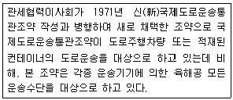
- CCC (Customs Convention on Containers)
- CIP (Container Inspection Program)
- IT I (Customs Convention on the International Transit of Goods)
- CSI (Container Security Initiative)
- CSC (International Convention for a Safe Containers)
(정답률: 40%)
59. 가로 150 cm, 세로 120 cm, 높이 30 cm의 Box 4개가 있다. Box 한 개당 실제 총 중량이 80 kg일 때 항공운임 산출중량을 구한 것으로 옳은 것은?
- 320 kg
- 340 kg
- 360 kg
- 380 kg
- 400 kg
(정답률: 30%)
60. D회사의 15톤 트럭을 이용한 2014년도 화물자동차 운행실적이 아래 내용과 같을 경우 가동률(ㄱ), 실차율(ㄴ)이 각각 옳게 나열된 것은?
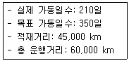
- ㄱ: 60%, ㄴ: 70%
- ㄱ: 60%, ㄴ: 75%
- ㄱ: 75%, ㄴ: 60%
- ㄱ: 133%, ㄴ: 167%
- ㄱ: 167%, ㄴ: 133%
(정답률: 40%)
61. 고속도로 화물차 통행대수를 분석하여 다음과 같은 회귀식이 도출되었다. 다른 조건이 동일할 때 A지점과 B지점의 통행료가 1,000원에서 1,500원으로 인상되었다. 이때 A지점과 B지점의 화물차 통행대수는 몇% 변화하는가? (단, 변화율을 계산할 때 평균값을 이용하지 말 것)
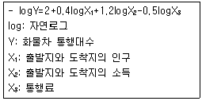
- 10% 감소
- 25% 감소
- 30% 감소
- 45% 감소
- 50% 감소
(정답률: 22%)
62. 정기선 운송과 부정기선 운송의 특성을 비교한 것으로 옳지 않은 것을 모두 고른 것은?
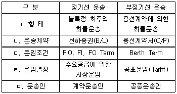
- ㄱ, ㄴ, ㄷ
- ㄱ, ㄷ, ㄹ
- ㄴ, ㄷ, ㄹ
- ㄴ, ㄹ, ㅁ
- ㄷ, ㄹ, ㅁ
(정답률: 45%)
63. 선박톤수에 관한 설명으로 옳지 않은 것은?
- 순톤수(Net Tonnage) : 여객 및 화물의 적재 등 직접적인 상행위에 사용되는 용적이며, 총톤수에서 선박의 운항에 직접적으로 필요한 공간의 용적을 뺀 톤수이다.
- 총톤수(Gross Tonnage) : 실제 화물을 실을 수 있는 톤수를 의미하는 것으로서, 순재화중량 또는 운송능력이라고도 한다.
- 재화중량톤수(Dead Weight Tonnage) : 공선상태로부터 만선이 될 때까지 실을 수 있는 화물, 여객, 연료, 식료, 음료수 등의 합계중량으로 상업상의 능력을 나타낸다.
- 배수톤수(Displacement Tonnage) : 선체의 수면 아래에 있는 부분의 용적과 대등한 물의 중량을 나타내는 배수량을 말한다.
- 재화용적톤수(Measurement Tonnage) :선박에 적재할 수 있는 화물의 최대용적을 표시하는 톤수로 서 최근에는 이 톤수는 거의 사용되지 않고 있다.
(정답률: 35%)
64. 국제복합운송에 관한 설명으로 옳은 것은?
- 대륙철도 노선으로는 TSR, TCR, TMR, TMGR 등이 있고, TCR은 중국 상해에서부터 출발한다.
- TAR 노선에는 한국의 부산을 잇는 동북아 노선이 아직 포함되어 있지 않다.
- 독일의 BMW 자동차 공장에서 보다 질 좋은 서비스 제공을 위해서 블록트레인의 운행이 세계 최초로 개시되었다.
- 위험부담의 분기점은 송화인이 물품을 복합운송인에게 인도하는 시점이다.
- 우리나라의 복합운송수단으로서 가장 많이 사용되고 있는 것이 Rail-Water 연계운송이다.
(정답률: 29%)
65. 복합운송인에 관한 설명으로 옳지 않은 것은?
- 복합운송인은 복합운송증권을 발행할 수 있으나, 운송주선인은 발행할 수 없다.
- 복합운송인은 실제 운송인일 수도 있고 계약운송인일 수도 있다.
- 수출업자에게 바람직한 운송경로의 선택과 소요비용을 계산하여 제시한다.
- 선적서류의 작성이나 신용장, 외환의 매매 등에 관한 은행업무를 대행한다.
- 화물의 포장 및 보관서비스를 제공한다.
(정답률: 40%)
66. 운송시장의 환경변화 요인으로 옳지 않은 것은?
- 정보화 사회의 진전
- 운송화물의 다품종 대량화
- 운송시장의 국제화
- 아웃소싱 시장의 확대
- 보안관련 규제 강화
(정답률: 41%)
67. 복합운송의 요건에 관한 설명으로 옳지 않은 것은?
- 단일운송계약: 송화인은 각 구간운송인과 하청운송계약을 체결한다.
- 단일운임: 전 운송구간에 대해 단일운임이 적용된다.
- 단일책임: 전 운송구간에 걸쳐 화주에게 단일책임을 진다.
- 복합운송증권의 발행: 화물을 인수한 경우 복합운송증권을 발행한다.
- 운송수단의 다양성: 서로 다른 2가지 이상의 운송수단에 의해 운송된다.
(정답률: 48%)
68. 내륙컨테이너기지(Inland Container Depot)에 관한 설명으로 옳지 않은 것은?
- 항만과 거의 유사한 장치, 보관, 집화, 분류 등의 기능을 수행한다.
- 주로 항만터미널 및 내륙운송수단과 연계가 편리한 지역에 위치한다.
- 내륙운송 연계시설과 컨테이너 야드(CY), 컨테이너화물조작장(CFS)등을 갖추고 있다.
- 내륙에 위치하고 있어 바다와 접해 있는 항만처럼 통관이나 혼재의 기능은 수행할 수 없다.
- 화물을 모아 한꺼번에 운송함으로써 물류비용을 절감할 수 있다.
(정답률: 49%)
69. 우리나라의 각종 운송사업에 관한 설명으로 옳은 것은?
- 소형항공운송사업은 유상으로 화물을 운송할 수 없으나, 여객은 유상으로 운송할 수 있다.
- 철도사업자로는 '한국철도공사법'에 따라 설립된 한국철도공사만이 지정되어 있어서 철도사업은 한국철도공사의 독점사업이다.
- 화물자동차 운송사업의 진입규제는 국토교통부장관의 허가를 받아야 하는 허가제이지만, 화물자동차 운송주선업과 화물자동차 운송가맹사업은 등록제이다.
- 해상여객운송사업자는 여객선을 이용하여 여객운송에 수반되는 화물을 운송할 수 있으며, 그 운임ㆍ요금은 해양수산부장관에게 미리 신고해야 한다.
- 국제물류주선업을 등록한 자(국제물류주선업자)는 그 등록기준에 관한 사항을 5년이 경과할 때마다 신고하여야 한다.
(정답률: 25%)
70. 운송의 역할에 관한 설명으로 옳은 것은?
- 제품 운송이 없어도 소비자들은 원하는 것을 무엇이든 가까운 소매점에서 구할 수 있다.
- 운송의 발달은 지역간ㆍ국가간의 경쟁 유발과 함께 재화의 지역간 이동을 원활하게 하여 제품의 시장가격을 차별화한다.
- 운송은 물류관리에 영향을 주지 않기 때문에 제품의 수익과 경쟁우위와는 관련이 없다.
- 저렴한 운송비와 대량운송 기술의 발달은 시장을 확대하고 대량생산과 대량소비를 가능하게 한다.
- 운송의 발달은 분리된 지역의 통합기능을 저해할 수 있다.
(정답률: 49%)
71. 운송수요에 관한 설명으로 옳지 않은 것은?
- 운송수요는 이질적 개별수요의 성격을 나타낸다.
- 운송수요는 운송수단의 대체가능 여부에 따라 증감하게 된다.
- 운송수요는 본원적 수요로서 서비스 가격(운임)의 변동에 대해 매우 탄력적으로 반응한다.
- 운송수요는 운송수단뿐만 아니라 보관, 창고, 포장, 하역 및 정보활동 등과 결합되어야 제대로 충족될 수 있다.
- 운송수요는 제품별로 계절적 변동성을 나타내는 경우도 있다.
(정답률: 31%)
72. 특수화물(special cargo)의 추가운임 부과에 관한설명으로 옳지 않은 것은?
- 특수 화물은 취급에 특별한 장비 및 주의를 요하므로 추가운임이 부과된다.
- 유황, 독극물, 화약, 인화성 액체, 방사성 물질 등과 같은 위험물은 특별취급을 요하므로 사전에 운송인에게 신고해야 하고 추가운임이 부과된다.
- 악취, 분진, 오염 등을 일으키는 원피, 아스팔트, 우지, 석탄, 고철 등의 기피화물은 신고를 하여야 하며, 종류에 따라 추가운임이 부과된다.
- 보통의 적양기(winch, crane)로 적양할 수 없는 통상 3톤 이상의 중량화물과 철도레일, 전신주, 파이프 등의 장척화물의 경우 추가운임이 부과된다.
- 생선, 야채 등의 변질화물과 냉동품은 미리 운송인에게 특별히 신고를 할 필요가 없고, 다만 종류에 따라 추가운임만 부과된다.
(정답률: 48%)
73. 운송의 특징에 관한 설명으로 옳지 않은 것은?
- 효율적인 운송으로 인해 소비자들은 보다 빠르고 저렴하게 재화를 획득할 수 있다.
- 운송이란 물리적인 형태를 가지고 있는 유형재이다.
- 운송은 제품의 경제적 가치 결정에 영향을 미친다.
- 장소적 이동이 곧 운송서비스의 생산이므로 운송이 창출하는 장소 효용은 고객이 원하는 제품을 원하는 장소에 도착하게 할 때 발생한다.
- 운송이 창출하는 시간 효용은 고객에게 제품을 고객이 필요한 제 시간에 정확히 배송될 때 발생한다.
(정답률: 49%)
74. 철광석, 석탄, 밀 등을 컨베이어벨트로 선박의 선창(船艙) 안으로 적재할 경우 화물이 선창(船艙) 가운데에만 쌓이게 된다. 이 때 이 화물을 인력으로 편편하게 골라주는 선창 내 화물고르기 작업을 가리키는 용어로 옳은 것은?
- Loading
- Devanning
- Stuffing
- Trimming
- Stowage
(정답률: 34%)
75. 운임의 종류에 관한 설명으로 옳지 않은 것은?
- Dead Freight: 화물의 실제 적재량이 계약량에 미달할 경우 그 부족분에 대해 지불하는 부적(不積) 운임이다.
- Freight Collect: 운송이 완료되기 전에 운송인에게 미리 지불하는 선불운임이다.
- Pro Rata Freight: 운송도중 불가항력 또는 기타 원인에 의해 운송을 계속할 수 없게 되어 중도에 화물을 인도할 경우, 그 때까지 이행된 운송비율에 따라 지불하는 비례운임이다.
- Ad Valorem Freight: 금, 은, 유가증권, 귀금속 등과 같은 고가품의 경우 송장가격에 대한 일정률로 운임을 부과하는 종가운임이다.
- Back Freight: 원래의 목적지가 아닌 변경된 목적지로 운송해야 할 때 추가로 지불하는 반송운임이다.
(정답률: 33%)
76. 운송수단과 그 특징으로 옳게 짝지어진 것은?
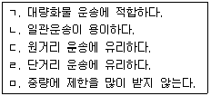
- 선박: ㄱ, ㄷ, ㅁ
- 철도: ㄱ, ㄹ, ㅁ
- 항공기: ㄴ, ㄷ, ㅁ
- 화물차: ㄴ, ㄹ, ㅁ
- 파이프라인: ㄱ, ㄷ, ㄹ
(정답률: 52%)
77. 국토교통부에서 추진 중인 제2차 국가철도망 구축 계획에 관한 설명으로 옳지 않은 것은?
- 철도중심의 교통ㆍ물류체계로의 전환을 통해, 저탄소 녹색성장 기반을 마련하고자 한다.
- 주요 추진과제로서 2020년까지 전국 모든 광역시를 고속 KTX망으로 연결하고, 대도시권 30분대 광역ㆍ급행 철도망을 구축하며, 녹색 철도물류체계를 구축하고, 편리한 철도 이용환경을 조성하는 것이다.
- 철도망을 통해 국토를 통합ㆍ다핵ㆍ개방형 구조로 재편하는 것을 비전으로, 전국 주요거점을 일상 통근시간대인 1시간 30분대로 연결하여, 하나의 도시권으로 통합하는 것을 목표로 한다.
- 전국 주요 도시가 1시간 30분대로 연결되어 접근성의 획기적 개선으로 실질적인 지역균형발전을 지원한다.
- 산업단지ㆍ물류거점을 연결하는 대량수송ㆍ고속 철도 물류 네트워크를 구축하기 위해서 화물수송비율이 높은 경부선ㆍ호남선을 중심으로 주요 선로ㆍ구간의 선로용량 증대와 철도화물 수송능력을 확충한다.
(정답률: 40%)
78. 우리나라 철도화물 운임체계에 관한 설명으로 옳지 않은 것은?
- 일반화물의 경우 차급화물은 화차 1량 단위로 운임을 계산하고, 컨테이너 화물은 규격별 1개 단위로 계산한다.
- 일반화물 운임은 운임단가(원)×수송거리(km)×화물중량(ton)으로 산정한다.
- 일반화물의 화차 1량에 대한 최저운임은 사용화차의 최대 적재중량에 대한 100 km에 해당하는 운임이다.
- 컨테이너 화물 운임은 컨테이너 규격별(20 feet, 40 feet, 45 feet) 운임단가(원)×수송거리(km)로 산정한다.
- 화물을 넣지 않은 공(空) 컨테이너는 규격별로 적(積) 컨테이너 운임단가의 70%를 적용하여 계산한다.
(정답률: 43%)
79. 철도운송에 관한 설명으로 옳지 않은 것은?
- 우리나라 컨테이너 철도운송 방식은 TOFC 방식 중 Piggy back 방식이다.
- 도로체증을 피할 수 있고, 눈, 비, 바람 등 날씨에 의한 영향을 상대적으로 적게 받음으로 인해 장기적이고 안정적인 수송계획 수립이 가능하다.
- 화차 및 운송장비 구입비 등과 같은 고정비용은 높지만 윤활유비, 연료비 등과 같은 변동비용은 고정비용에 비해서 상대적으로 낮은 편이다.
- 2단적재 컨테이너 무개화차(double-stack container flatcar)는 단수의 평판 컨테이너 화차(flatcar)에 2개의 컨테이너를 동시에 적재하여 수송할 수 있도록 설계되어 결과적으로 각 열차의 수송용량을 두 배로 증가시킬 수 있게 된다.
- 근거리 운송 시 상대적으로 높은 운임과 문전에서 문전(door-to-door) 서비스 제공의 어려움이 철도 운송의 주요 단점으로 제시되고 있다.
(정답률: 39%)
80. 현재 우리나라에서 운영 중인 철도화물 운송 방법에 관한 것으로 옳지 않은 것은?
- 소화물 취급
- 화차 취급
- 컨테이너 취급
- 혼재차 취급
- KTX 이용 특송 서비스
(정답률: 27%)
3과목: 국제물류론
81. 세계적으로 환경문제가 중시됨에 따라 물류활동에서 발생하는 환경피해를 최소화하려는 그린물류 (Green Logistics)의 중요성이 점차 증대되고 있다. 다음 중 이와 거리가 가장 먼 것은?
- Clean Development Mechanism
- Modal Shift
- Emission Trading System
- Onshore Power Supply
- Risk Pooling
(정답률: 42%)
82. 최근 국제물류를 둘러싼 환경변화에 관한 설명으로 옳지 않은 것은?
- 물류관리에 있어서 통합물류관리의 중요성이 증대되고 있다.
- 다국적기업의 글로벌생산네트워크 확대로 국제물류에 대한 수요가 증가하고 있다.
- 9ㆍ11테러 이후 국제물류 전반에서 물류보안이 강화되고 있다.
- 비용절감, 규모의 경제 달성 등을 위해 물류업체 간의 전략적 제휴와 인수합병이 확대되고 있다.
- 물류비 절감차원에서 재고과다형 전략이 확산되고 있다.
(정답률: 49%)
83. 국제물류관리의 특징에 관한 설명으로 옳은 것은?
- 국내물류보다 운송절차가 단순하여 관리가 용이하다.
- 신제품을 해외시장에 공급하는 경우 리드타임을 감소시키는 것이 수익창출과 밀접한 관계가 있다.
- 국가 간 물류시스템, 설비, 장비가 표준화되어 있어 관리상 제약이 거의 없다.
- Point-to-Point 운송방식이 확대되고 있는 반면 Hub & Spoke 방식은 축소되는 추세이다.
- 국제물류는 국가 간 수출입 통관절차가 단순하여 국내물류와 비교할 때 물류관리에 큰 차이가 없다.
(정답률: 44%)
84. 컨테이너 터미널과 그 곳에서 사용되는 장비에 관한 설명으로 옳은 것은?
- Apron은 선박이 접안하여 하역작업이 이루어질 수 있도록 구축된 구조물이다.
- Off-dock CY는 컨테이너의 인수, 인도, 보관을 위해 터미널 내에 있는 장소이다.
- Berth는 하역작업을 위한 공간으로 갠트리크레인이 설치되어 컨테이너의 양적하가 이루어지는 장소이다.
- Transtainer는 컨테이너를 야드에 장치하거나 장치된 컨테이너를 샤시에 실어주는 작업을 하는 컨테이너 이동장비이다.
- Reach Stacker는 Apron에서 컨테이너의 양적하에 사용되는 장비이다.
(정답률: 46%)
85. 항공화물운송장(AWB)과 선하증권(B/L)에 관한 설명으로 옳지 않은 것은?
- AWB은 상환증권이며 기명식으로 발행된다.
- AWB상의 Declared Value for Carriage란에는 송하인의 운송신고가격이 기재된다.
- AWB은 일반적으로 송하인이 작성하는 것이 원칙이다.
- B/L은 선사가 작성하며 일반적으로 지시식으로 발행된다.
- B/L은 화물수령증이며 권리증권의 기능을 갖는다.
(정답률: 44%)
86. 용선계약의 하역비 부담과 관련하여 선적 시에는 용선주(owner)가 부담하고 양륙 시에는 용선자(charterer)가 부담하는 조건은?
- Berth Term
- FI
- FO
- FIO
- FIOST
(정답률: 48%)
87. 항공화물운송의 특성에 관한 설명으로 옳지 않은 것은?
- 항공화물운송은 항공여객운송과 달리 지상조업(Ground Handling)이 필요하다.
- 항공화물전용기에 의한 운송은 주로 야간에 이루어진다.
- 항공화물은 해상화물에 비해 운송인과 실화주 간 직접 운송계약을 체결하는 경우가 많다.
- 정시성과 신속성을 추구하는 화주는 타 운송수단에 비해 높은 운임에도 불구하고 항공화물운송을 선호한다.
- 항공화물운송은 항공여객운송에 비해 편도운송이 많다.
(정답률: 45%)
88. 국제항공운송관련 기구 또는 국제항공조약에 해당하지 않는 것은?
- IATA
- Montreal Agreement
- Warsaw Convention
- ICAO
- MARPOL
(정답률: 45%)
89. 물류보안에 관한 설명으로 옳지 않은 것은?
- 24-hour rule은 컨테이너 선박이 미국에 입항하기 24시간 전에 수출업자가 컨테이너 화물에 대한 세부정보를 미국 관세청(세관)에 제출하도록 규정한 내용이다.
- Trade Act of 2002 Final Rule에 따르면 해상뿐만 아니라 항공, 철도, 트럭 등의 운송수단을 통해 미국으로 수입되는 화물에 대한 정보를 미국 관세청 (세관)에 제출하도록 규정하고 있다.
- C-TPAT는 테러방지를 목적으로 하는 미국 관세청(세관)과 기업의 파트너십 프로그램이다.
- 10+2 rule에 따르면 운송인은 미국으로 향하는 선박에 적재된 컨테이너에 관한 내용과 선박 적부계획을 제출하여야 한다.
- Container Security Initiative는 테러 위험이 있는 컨테이너 화물이 미국으로 선적되기 전에 외국항에서 검사하고 확인할 수 있도록 하는 것이다.
(정답률: 30%)
90. 컨테이너의 철도운송에 관한 설명으로 옳지 않은 것은?
- 컨테이너의 철도운송은 크게 TOFC 방식과 COFC 방식으로 구분된다.
- TOFC 방식은 이단적열차(double stack train)에 적합하다.
- TOFC 방식은 캥거루방식과 피기백방식으로 구분할 수 있다.
- 대부분의 철도운송은 화물의 집하 및 인도를 위해 트럭의 도움을 필요로 한다.
- 우리나라에서 철송기지 역할을 하고 있는 ICD는 의왕과 양산이 대표적이다.
(정답률: 49%)
91. 화주가 반출해 간 컨테이너 또는 트레일러를 허용된 시간 이내에 지정 선사의 CY로 반환하지 않을 경우 지불하는 비용은?
- Demurrage
- Outport Arbitrary
- Detention Charge
- Despatch Money
- Terminal Handling Charge
(정답률: 50%)
92. FCL 컨테이너 수출화물 운송에 관한 설명으로 옳은 것을 모두 고른 것은?
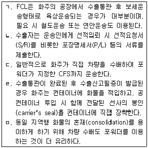
- ㄱ, ㄴ, ㄹ
- ㄱ, ㄴ, ㅁ
- ㄱ, ㄷ, ㄹ
- ㄴ, ㄷ, ㄹ
- ㄷ, ㄹ, ㅁ
(정답률: 25%)
93. 정기선 운임에 관한 설명으로 옳지 않은 것은?
- 전쟁위험 할증료(War Risks Premium)는 전쟁위험 지역이나 전쟁지역에서 양적하되는 화물에 대하여 부과하는 운임이다.
- 체선/체화할증료(Port Congestion Surcharge)는 도착항의 항만 혼잡으로 신속히 하역할 수 없어 손실이 발생할 경우 이를 보전하기 위해 부과하는 운임이다.
- 초과중량할증료(Heavy Cargo Surcharge)는 일정 한도 이상의 중량화물 취급에 따른 추가비용을 보전하기 위해 부과하는 운임이다.
- 통화할증료(Currency Adjustment Factor)는 벙커유의 가격변동에 따른 손실을 보전하기 위해 부과하는 운임이다.
- 양륙항변경할증료(Diversion Surcharge)는 당초 지정된 양륙항을 운송 도중에 변경할 경우 부과하는 운임이다.
(정답률: 55%)
94. 국제물품매매계약에 관한 UN 협약(비엔나협약, 1980)에 규정되어 있는 매수인의 구제권리가 아닌 것은?
- 물품명세확정권
- 대체품인도청구권
- 하자보완청구권
- 대금감액권
- 조기이행거절권
(정답률: 22%)
95. 컨테이너 뒷문의 표시내용 중 PAYLOAD가 의미하는 것은?
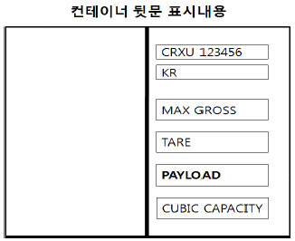
- 컨테이너 자체무게
- 컨테이너가 실을 수 있는 화물의 총무게
- 컨테이너 자체무게와 그 안에 적입가능한 화물의 총무게의 합계
- 컨테이너가 실을 수 있는 부피의 한계
- 컨테이너 자체무게와 샤시 무게의 합계
(정답률: 47%)
96. Gencon Form의 용선계약서에서는 하역준비완료 통지서(Notice of Readiness)가 통지된 후 일정기간이 경과하면 정박기간이 개시된다. 다음의 (ㄱ), (ㄴ)에 들어갈 시간으로 옳은 것은?
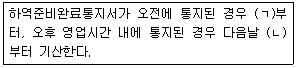
- (ㄱ) 오후 1시, (ㄴ) 오전 6시
- (ㄱ) 오후 1시, (ㄴ) 오전 12시
- (ㄱ) 오후 6시, (ㄴ) 오전 6시
- (ㄱ) 오후 6시, (ㄴ) 오전 12시
- (ㄱ) 오후 6시, (ㄴ) 오후 6시
(정답률: 38%)
97. 항해용선계약에 관한 설명으로 옳은 것은?
- Not Before Clause는 본선이 선적준비완료 예정일 이전에 도착할 경우 선적의무가 있다는 조항이다.
- Lien Clause는 화주가 운임 및 기타 부대경비를 지급하지 아니할 때 선주가 그 화물을 유치할 수있는 권한이 있음을 나타내는 조항이다.
- Off-hire Clause는 용선기간 중 용선자의 귀책사유가 발생하여 본선의 이용이 방해될 때 용선자가 용선료의 지급의무를 중단한다는 조항이다.
- Running Laydays는 하역시작일로부터 끝날 때까지의 기간 중 원칙적으로 일요일과 공휴일을 제외한 모든 기간을 정박기간으로 계산하는 방법이다.
- Cancelling Clause는 당해 계약날짜에 선박이 준비되지 않으면 즉시 계약이 해지된다는 조항이다.
(정답률: 25%)
98. 신용장 통일규칙(UCP 600)에서 양도가능 신용장에 관한 설명으로 옳지 않은 것은?
- 양도가능 신용장은 “양도가능(transferable)”이라고 특별히 명기한 신용장을 말한다.
- 양도된 신용장은 양도은행에 의하여 제2수익자가 사용할 수 있도록 하는 신용장을 말한다.
- 양도할 때 별도의 합의가 없는 한 양도와 관련된 비용(수수료, 요금, 비용, 경비)은 제2수익자에 의하여 지급되어야 한다.
- 분할어음발행 또는 분할선적이 허용되는 한, 제2 수익자에게 분할 양도될 수 있다.
- 양도된 신용장은 제2수익자의 요청에 의하여 그 이후 어떠한 수익자에게도 양도될 수 없다.
(정답률: 39%)
99. 선적 및 양륙 업무에 따른 부속서류에 관한 설명으로 옳지 않은 것은?
- Tally Sheet에는 하역화물의 개수, 화인, 포장상태, 화물사고 등을 기재한다.
- Stowage Plan은 체계적인 하역작업 및 본선안전을 위한 것으로 여기에는 선적용 적부도, 양륙용적부도가 있다.
- Delivery Order는 양륙지에서 선사가 수하인으로부터 B/L을 받고 화물인도를 지시하는 서류이다.
- Booking Note는 화물 양륙 시 하역업자가 양륙화물을 적하목록과 대조하여 본선에 교부하는 서류이다.
- Measurement/Weight Certificate는 각 포장당 용적 및 총중량의 명세서이며, 해상운임 산정의 기초가 된다.
(정답률: 49%)
100. 대전에 위치한 A회사가 미국 덴버에 위치한 B회사로부터 물품을 수입(덴버에 위치한 B회사 발송 → LA항 선적 → 부산항 입항 → 대전에 위치한 A회사 도착)하면서 지불한 운임 및 부대비의 세부내역은 다음과 같다. 이 경우 관세와 부가가치세는?
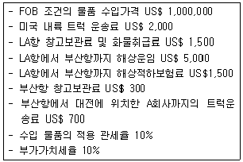
- 관세 US$ 101,000, 부가가치세 US$ 101,000
- 관세 US$ 101,000, 부가가치세 US$ 111,100
- 관세 US$ 101,070, 부가가치세 US$ 101,070
- 관세 US$ 101,070, 부가가치세 US$ 111,177
- 관세 US$ 101,100, 부가가치세 US$ 111,210
(정답률: 34%)
101. 국제복합운송에 관한 설명으로 옳지 않은 것은?
- 국제복합운송이란 두 개 이상의 상이한 운송수단을 이용하는 것으로 오늘날 일반적인 국제운송 형태이다.
- 국제복합운송의 기본요건은 일관운임(through rate) 설정, 일관선하증권(through B/L) 발행, 단일운송인 책임(single carrier's liability) 등이다.
- Buyer's Consolidation은 단일 송하인의 화물을 다수의 수하인에게 운송해 주는 형태이다.
- NVOCC는 운송수단을 직접 보유하지 않은 계약운송인형 국제복합운송업자를 말한다.
- Land Bridge란 육ㆍ해 복합일관운송이 실현됨에 따라 해상-육로-해상으로 이어지는 운송구간 중 육로운송구간을 말한다.
(정답률: 50%)
102. 서울에 소재하는 매도인 A가 프랑스 파리에 소재 하는 매수인 B와 거래한다. 거래물품의 최종 도착지는 파리이고, 거래물품은 서울 → 부산 → 로테르담 → 파리 경로로 운송된다. 이 경우 로테르담에서 파리 구간의 운송계약과 운임을 매도인 A가 부담하게 되는 Incoterms® 2010 거래규칙은?
- EXW
- CFR
- FOB
- CPT
- CIF
(정답률: 45%)
103. 다음은 국제매매계약조건 중 중재조항의 일부이다. 이에 관한 내용으로 옳은 것은?
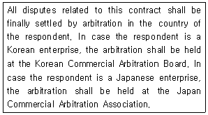
- 피신청인이 일본기업일 경우 중재를 일본상사중재 협회에서 진행한다.
- 이 계약과 관련하여 발생하는 모든 분쟁은 국제기구 내 중재기관을 이용하여 해결한다.
- 상사분쟁은 중재규칙에 따라 선임된 1인 또는 그 이상의 중재인에 의하여 최종적으로 해결된다.
- 신청인이 한국기업일 경우 중재를 대한상사중재원에서 진행한다.
- 이 계약과 관련하여 발생하는 모든 분쟁은 신청인의 국가에서 중재로 최종 해결한다.
(정답률: 30%)
104. 해상보험 용어에 관한 설명으로 옳지 않은 것은?
- 위부(Abandonment)는 피보험 목적물을 전손으로 추정하도록 하기 위하여 잔존물의 소유권과 제3자에 대한 배상청구권을 보험자에게 양도하는 것이다.
- 대위(Subrogation)는 피보험자가 보험자로부터 손해보상을 받으면 피보험자가 보험의 목적이나 제3자에 대하여 가지는 권리를 보험자에게 당연히 이전시키도록 하는 것이다.
- 보험료(Premium)는 보험계약을 체결할 때 보험계약자가 위험을 전가하기 위해 지불하는 금액을 말한다.
- 특별비용(Particular Charge)은 피보험 목적물의 안전, 보존을 위하여 피보험자 또는 대리인에 의하여 지출된 비용으로 공동해손비용과 구조비 이외의 비용이다.
- 공동보험(Coinsurance)은 피보험이익 및 위험에 관해 복수의 보험계약이 존재하며 그 보험금액의 합계액이 보험가액을 초과하는 경우이다.
(정답률: 46%)
1⑤. 다음 ( )에 적합한 국제물류거점과 운송수단을 바르게 연결한 것은? (순서대로 (A)-(B)-(ㄱ)-(ㄴ))
- LA - 뉴욕 - 트럭 - 항공
- 사바나 - 뉴올리언즈 - 트럭 - 해상
- 사바나 - 뉴욕 - 철도 - 항공
- LA - 뉴올리언즈 - 철도 - 해상
- 사바나 - 뉴욕 - 철도 - 항공
(정답률: 49%)
106. 다음은 Incoterms® 2010의 일부이다. ( )에 들어갈 수 있는 규칙을 모두 고른 것은?
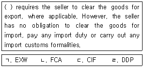
- ㄱ, ㄴ
- ㄱ, ㄷ
- ㄴ, ㄷ
- ㄴ, ㄹ
- ㄷ, ㄹ
(정답률: 30%)
107. 무역계약의 기본조건에 관한 설명으로 옳지 않은 것은?
- 신용장거래에서는 신용장상에 분할선적을 금지하는 문언이 없는 한, 분할선적은 허용하는 것으로 본다.
- 선적일자와 관련하여 사용되는 용어에 있어 to, until, from은 당해 일자를 제외하는 것으로 본다.
- 신용장상에 과부족금지 문언이 없는 한 환어음의 발행금액이 신용장금액을 초과하지 않는 범위 내에서 5 % 까지의 과부족은 용인된다.
- 일반적으로 FOB, CFR, CIF 등의 규칙은 별도의 합의가 없는 한, 선적품질조건에 따르는 것으로 본다.
- 표준품매매에서 USQ(Usual Standard Quality) 조건은 공인검사기관이나 표준기관이 인증한 통상적인 품질을 표준품으로 결정하는 조건이다.
(정답률: 43%)
108. 복합운송서류에 관한 UNCTAD/ICC 규칙의 내용에 관한 설명으로 옳지 않은 것은?
- 복합운송서류는 유통가능한 형식으로 발행된 복합 운송계약을 증명하는 서류이며, 전자자료교환(EDI) 통신문으로 대체할 수 없다.
- 화물이 정해진 인도 기일로부터 90일 내에 인도되지 아니한 경우에는, 청구권자는 반증이 없는 한그 화물을 멸실된 것으로 취급할 수 있다.
- 화물의 멸실 또는 손상에 대한 배상액은 화물이 수하인에게 인도되는 장소와 시간 또는 화물을 계약에 따라 인도하여야 할 장소와 시간의 화물 가액에 의하여 산정하여야 한다.
- 송하인이라 함은 복합운송인과 복합운송계약을 체결하는 자를 의미한다.
- 국제복합운송인의 종합적인 책임에 대한 총액은 화물 전손 시 발생하는 책임한도를 초과하지 못한다.
(정답률: 45%)
109. 글로벌기업과 그들의 물류전략을 연결한 것으로 옳지 않은 것은?
- FedEx - Hub & Spoke System
- P&G - Continuous Replenishment Program
- UPS - Super Tracker System
- Walmart - Point of Sale System
- ZARA - Quick Response System
(정답률: 19%)
110. 항공화물 운임결정의 일반원칙으로 옳지 않은 것은?
- 요율, 요금 및 그와 관련된 규정의 적용은 항공화물 운송장(AWB)의 발행 당일에 유효한 것을 적용한다.
- 항공화물의 요율은 공항에서 공항끼리의 운송만을 위하여 설정된 것으로 부수적으로 발생되는 서비스에 대한 요금은 별도로 계산된다.
- 별도로 규정이 설정되어 있는 경우를 제외하고는 요율과 요금은 가장 낮은 것으로 적용하여야 한다.
- 모든 화물요율은 kg당 요율로 설정되어 있다. 단, 미국 출발화물의 요율은 파운드(lb)당 및 kg당 요율로 설정한다.
- 화물의 실제 운송경로는 운임산출 시 근거로 한 경로와 반드시 일치해야 한다.
(정답률: 48%)
111. 아래 지도에 표시된 ①∼⑤에 관한 설명으로 옳지 않은 것은?
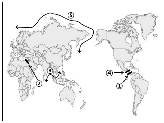
- 파나마운하 - 선박대형화 추세에 대응하기 위해 현재 운하 확장공사가 진행 중이며 완공되면 10,000 TEU급 이상 초대형 컨테이너선박의 운항이 가능하게 된다.
- 수에즈운하 - 150년 넘게 이집트경제의 중심으로 역할해 왔으며 현재 제2의 수에즈운하가 건설 중이다.
- 말라카해협 - 세계 주요 해상항로 중 하나로, 아시아와 유럽을 이으며 중국의 일대일로전략의 주요 해상운송로에 포함된다.
- 니카라과운하 - 중남미지역에서 미국의 해상패권을 견제하려는 러시아의 해상운송망 확보전략의 일환으로 2014년 착공하였다.
- 북극해항로 - 러시아연안을 항해하는 북동항로와 캐나다 연안을 지나는 북서항로가 있다.
(정답률: 35%)
112. 해상운송계약의 비용분담 기준이다. (ㄱ)∼(ㄷ)에 들어갈 내용으로 옳은 것은?
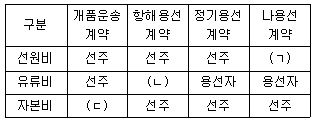
- (ㄱ) 용선자, (ㄴ) 선주, (ㄷ) 선주
- (ㄱ) 용선자, (ㄴ) 용선자, (ㄷ) 선주
- (ㄱ) 용선자, (ㄴ) 선주, (ㄷ) 용선자
- (ㄱ) 선주, (ㄴ) 용선자, (ㄷ) 용선자
- (ㄱ) 선주, (ㄴ) 용선자, (ㄷ) 선주
(정답률: 21%)
113. 국제해상물품운송법에 근거한 용선계약서나 선하증권에서 운송인의 면책사항이 아닌 것은?
- 불가항력에 기인한 손해
- 폭동, 내란, 파업 등에 의한 손해
- 화물의 성질 또는 하자에 의해서 생긴 손해
- 송하인의 과실에서 생긴 손해
- 운송인이 주의의무를 위반하여 생긴 손해
(정답률: 53%)
114. 선적절차와 관련된 서류에 관한 설명으로 옳지 않은 것은?
- Equipment Interchange Receipt는 컨테이너 트랙터 기사가 공컨테이너를 화주에게 전달할 때 사용되는 서류이다.
- Container Load Plan은 LCL화물의 경우 CFS 운영업자가 작성하는 서류이다.
- Dock Receipt는 CY에 반입된 화물의 수령증으로 발급되며, 선사는 이를 근거로 컨테이너 선하증권을 발행한다.
- Shipping Request는 화주가 선박회사에 제출하는 선적의뢰서로서, 선적을 의뢰하는 화물을 선적할 수 있는 공간을 확보하기 위한 서류이다.
- Letter of Guarantee는 화주가 선박회사에 대해 발행하는 서류로, 향후 화물에 문제가 발생하더라도 선박회사에 책임을 전가시키지 않는다는 취지의 각서이다.
(정답률: 49%)
115. 항공화물의 품목분류요율(Commodity Classification Rate)은 일반화물요율보다 높게 설정되는 할증품목(Surcharge Item)과 낮게 설정되는 할인품목(Reduction Item)으로 구분된다. 다음 중 할증품목을 모두 고른 것은?
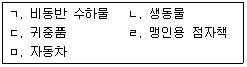
- ㄱ, ㄴ, ㄷ
- ㄱ, ㄴ, ㄹ
- ㄴ, ㄷ, ㄹ
- ㄴ, ㄷ, ㅁ
- ㄷ, ㄹ, ㅁ
(정답률: 42%)
116. 항공화물터미널에서 화물을 파렛트에 적재 (Build-up)하거나 해체(Break down)할 때 사용되는 설비는?
- Contour Gauge
- Work Station
- By-pass Line
- Elevating Transfer Vehicle
- Rack
(정답률: 22%)
117. 다음은 일반거래조건 협정서의 일부이다. ①∼⑤의 내용을 설명한 것으로 옳지 않은 것은?
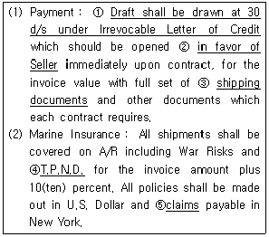
- 결제조건은 취소불능신용장하에서 일람 후 30일 출급환어음 조건이다.
- 신용장의 수익자는 매도인이다.
- 대표적인 선적서류는 Bill of Lading, Insurance Policy, Commercial Invoice 이다.
- T.P.N.D는 도난ㆍ발하ㆍ불착위험을 말한다.
- 손해배상청구를 의미한다.
(정답률: 33%)
118. 다음 (ㄱ), (ㄴ)에서 설명하는 선하증권의 종류는?
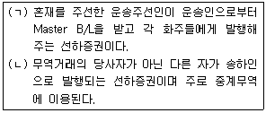
- (ㄱ) Groupage B/L, (ㄴ) Switch B/L
- (ㄱ) Groupage B/L, (ㄴ) Third party B/L
- (ㄱ) House B/L, (ㄴ) Switch B/L
- (ㄱ) House B/L, (ㄴ) Third party B/L
- (ㄱ) House B/L, (ㄴ) Surrender B/L
(정답률: 34%)
119. 최근 국제연합(UN) 산하기구인 국제해사기구(IMO)의 사무총장으로 사상 처음 한국인이 선출되었다. 다음 중 국제해사기구(IMO)의 설립목적과 거리가 먼 것은?
- 정부간 해사기술의 상호협력
- 국제민간선주들의 권익보호
- 해양오염방지대책 수립
- 해사안전대책 수립
- 국제해사관련 협약의 시행 및 권고
(정답률: 40%)
120. 다음은 수입통관절차이다. (ㄱ)∼(ㅁ)에 들어갈 내용으로 옳지 않은 것은?
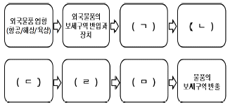
- (ㄱ) 수입신고
- (ㄴ) 수입신고 내용의 심사
- (ㄷ) 신고물품의 검사
- (ㄹ) 신고수리 및 내국물품의 외국물품화
- (ㅁ) 납세
(정답률: 49%)